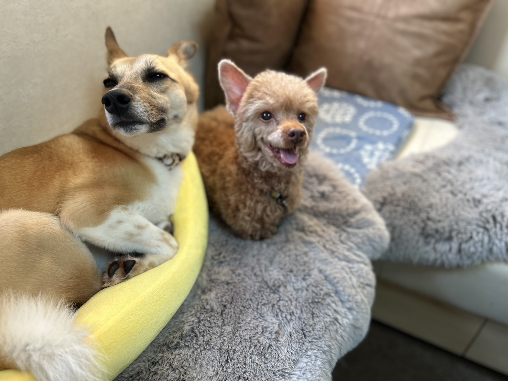

訪問ケア・在宅治療サポート
通えない日も、
暮らしのなかでケアを続ける。
高齢、持病、通院がむずかしくなった子のために。獣医師がご自宅へ伺い、 かかりつけの先生と連携しながら、皮下点滴や投薬のサポート、日々の体調管理、在宅での介護までお手伝いします。 診察台ではなく、いつものソファや寝床で。
LLINEで相談するできること。
- 健康チェック・体調観察：食欲、排泄、動き方、呼吸。毎回、医療の目で確認します。
- 投薬サポート：飲ませ方のコツも含めて、続けやすい形にします。
- 皮下点滴サポート：かかりつけの先生の指示のもとで対応します。
- 食事・水分の管理確認：食べられる量や姿勢の工夫をご提案します。
- 排泄・体調の確認：介護が必要な子の負担を減らす方法を一緒に考えます。
- 介護に関するアドバイス：寝床の整え方、床ずれの予防、抱き方など。
- 飼い主さまへのケア指導：「どう接したらいいか」の不安も一緒に解いていきます。
- 毎回LINEでご報告：訪問後48時間はLINEでご質問・ご相談に対応します。
すべて税込・
キャッシュレス決済です。
まず初回カウンセリングでご自宅に伺い、必要なケアの内容を確認します
ご利用内容に合わせたお見積もりを、初回カウンセリングでお出しします
お支払いはキャッシュレスのみ（カード／Apple Pay／Google Pay）
複数の割増は重複適用されます
はじめての方も、
無理なく一歩ずつ。
通院も介護も、
毎日が小さな葛藤の連続。
負担になってきた
落ちてきている
自分で行うのが不安
時間が取りにくい
不安で出かけられない
気づけているか心配
解けるかもしれません。
かかりつけの先生と、
役割を分けて支えます。
診断や新たな処方は行いません。かかりつけの先生の方針のもとで、ご自宅でできる処置と日々のケアを担当します。
通院がむずかしくなっても、皮下点滴や投薬、体調の観察は続ける必要があります。 おおたはら動物診療所は、その部分をご自宅で引き受ける役割です。 かかりつけの動物病院とは対立するものではなく、情報を共有しながら、その子が慣れた環境で医療的なサポートを受けられるようにします。
「どこまでお願いできるのか分からない」という段階でのご相談も歓迎します。
獣医師だから、
できることがあります。
こうしたご相談を、
お受けしています。
少しだけ、
自己紹介させてください。
獣医師の大田原こと美です。日本大学 獣医学科を卒業後、沖縄・愛知の動物病院に勤務し、愛知では往診も 担当してきました。現在は東京都内2施設・埼玉県内の動物病院に勤務し、いずれの施設でも行動診療を 担当するかたわら、埼玉県所沢市を拠点に訪問ケア・在宅治療サポートを行っています。
すべてが治療で解決するわけではなく、日々のケアや環境、ご家族の関わり方も、同じくらい大切だと思っています。 「治療だけでなく、その子の暮らしに寄り添いたい」——そんな思いから、訪問という形を選びました。
気になることは、
事前に。
読みもの。
通えない日も、
不安な夜も。
「どこまでお願いできるのか」からで構いません。
まずはLINEでメッセージをお送りください。
訪問ケアでは診断・新たな処方は行いません。処置・投薬はかかりつけの動物病院の指示のもとで対応します。